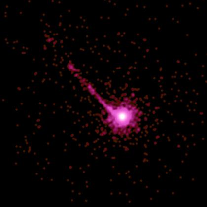
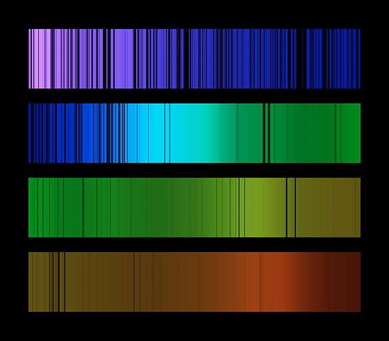
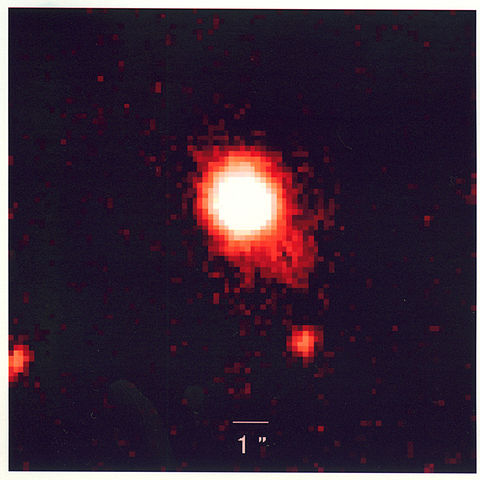
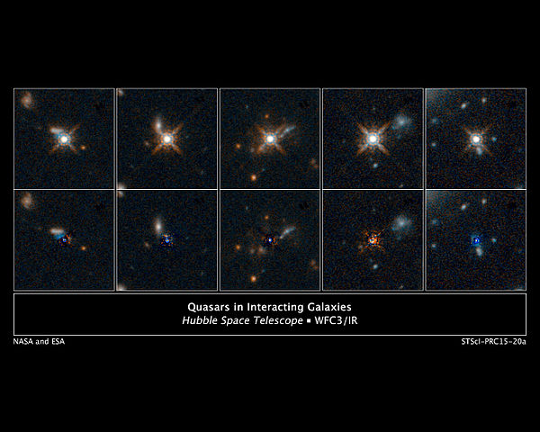

A quasar (also quasi-stellar object or QSO) is an active galactic nucleus of very high luminosity. A quasar consists of a supermassive black hole surrounded by an orbiting accretion disk of gas. As gas in the accretion disk falls toward the black hole, energy is released in the form of electromagnetic radiation. Quasars emit energy across the electromagnetic spectrum and can be observed at radio, infrared, visible, ultraviolet, and X-ray wavelengths. The most powerful quasars have luminosities exceeding 1041 W, thousands of times greater than the luminosity of a large galaxy such as the Milky Way.
The term "quasar" originated as a contraction of "quasi-stellar radio source", because quasars were first identified as sources of radio-wave emission, and in photographic images at visible wavelengths they resembled point-like stars. High-resolution images of quasars, particularly from the Hubble Space Telescope, have demonstrated that quasars occur in the centers of galaxies, and that some quasar host galaxies are strongly interacting or merging galaxies.
Properties
More than 200,000 quasars are known, most from the Sloan Digital Sky Survey. All observed quasar spectra have redshifts between 0.056 and 7.085. Applying Hubble's law to these redshifts, it can be shown that they are between 600 million and 28.85 billion light-years away (in terms of comoving distance). Because of the great distances to the farthest quasars and the finite velocity of light, they and their surrounding space appear as they existed in the very early universe.
The power of quasars originates from supermassive black holes that are believed to exist at the core of all galaxies. The Doppler shifts of stars near the cores of galaxies indicate that they are rotating around tremendous masses with very steep gravity gradients, suggesting black holes.
Although quasars appear faint when viewed from Earth, they are visible from extreme distances, being the most luminous objects in the known universe. The brightest quasar in the sky is 3C 273 in the constellation of Virgo. It has an average apparent magnitude of 12.8 (bright enough to be seen through a medium-size amateur telescope), but it has an absolute magnitude of −26.7. From a distance of about 33 light-years, this object would shine in the sky about as brightly as our sun. This quasar's luminosity is, therefore, about 4 trillion times that of the Sun, or about 100 times that of the total light of giant galaxies like the Milky Way. This assumes the quasar is radiating energy in all directions, but the active galactic nucleus is believed to be radiating preferentially in the direction of its jet. In a universe containing hundreds of billions of galaxies, most of which had active nuclei billions of years ago but only seen today, it is statistically certain that thousands of energy jets should be pointed toward the Earth, some more directly than others. In many cases it is likely that the brighter the quasar, the more directly its jet is aimed at the Earth.
Emission generation
 Since quasars exhibit properties common to all active galaxies, the emission from quasars can be readily compared to those of smaller active galaxies powered by smaller supermassive black holes. To create a luminosity of 1040 watts (the typical brightness of a quasar), a super-massive black hole would have to consume the material equivalent of 10 stars per year. The brightest known quasars devour 1000 solar masses of material every year. The largest known is estimated to consume matter equivalent to 600 Earths per minute. Quasar luminosities can vary considerably over time, depending on their surroundings. Since it is difficult to fuel quasars for many billions of years, after a quasar finishes accreting the surrounding gas and dust, it becomes an ordinary galaxy.
Quasars also provide some clues as to the end of the Big Bang's reionization. The oldest known quasars display a Gunn-Peterson trough and have absorption regions in front of them indicating that the intergalactic medium at that time was neutral gas. More recent quasars show no absorption region but rather their spectra contain a spiky area known as the Lyman-alpha forest; this indicates that the intergalactic medium has undergone reionization into plasma, and that neutral gas exists only in small clouds.
Multiple quasars
A multiple-image quasar is a quasar whose light undergoes gravitational lensing, resulting in double, triple or quadruple images of the same quasar. The first such gravitational lens to be discovered was the double-imaged quasar Q0957+561 (or Twin Quasar) in 1979. A grouping of two or more quasars can result from a chance alignment, physical proximity, actual close physical interaction, or effects of gravity bending the light of a single quasar into two or more images.
The first quadruple quasar was discovered in 2015.
When two quasars are so nearly in the same direction as seen from Earth that they appear to be a single quasar but may be separated by the use of telescopes, they are referred to as a "double quasar", such as the Twin Quasar. These are two different quasars, and not the same quasar that is gravitationally lensed. This configuration is similar to the optical double star. Two quasars, a "quasar pair", may be closely related in time and space, and be gravitationally bound to one another. These may take the form of two quasars in the same galaxy cluster. This configuration is similar to two prominent stars in a star cluster. A "binary quasar", may be closely linked gravitationally and form a pair of interacting galaxies. This configuration is similar to that of a binary star system.